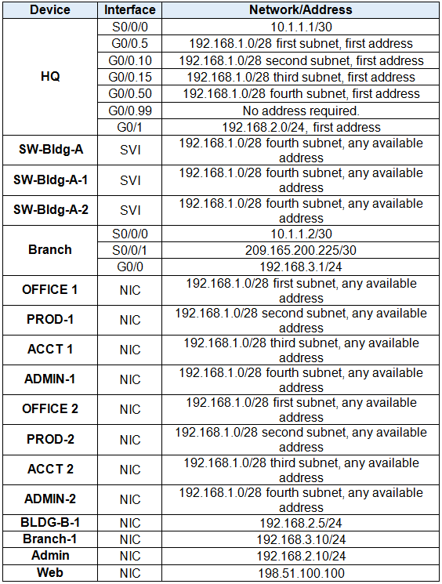
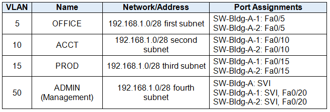
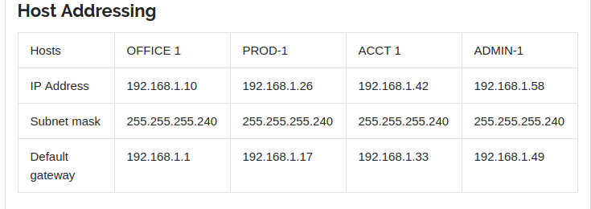

HQ Router
enable
configure terminal
no ip domain-lookup
hostname HQ
service password-encryption
enable secret class
banner motd $users that unauthorized access is prohibited$
line console 0
logging synchronous
password cisco
login
exit
ip domain-name cisco.com
username admin password class
crypto key generate rsa
yes
1024
ip ssh version 2
line vty 0 15
transport input ssh
login local
exit
interface gigabitEthernet 0/1
ip address 192.168.2.1 255.255.255.0
no shutdown
description Branch-1
int s0/0/0
ip address 10.1.1.1 255.255.255.252
no shutdown
description Connection-to-Branch
exit
interface g0/0.5
encapsulation dot1Q 5
ip address 192.168.1.1 255.255.255.240
interface g0/0.10
encapsulation dot1Q 10
ip address 192.168.1.17 255.255.255.240
interface g0/0.15
encapsulation dot1Q 15
ip address 192.168.1.33 255.255.255.240
interface g0/0.50
encapsulation dot1Q 50
ip address 192.168.1.49 255.255.255.240
exit
int g0/0
no sh
no shutdown
exit
ip access-list standard block15
deny 192.168.1.32 0.0.0.15
permit any
ip access-list standard ACL
line vty 0
access-class ACL in
int g0/0.10
ip access-group block15 out
exit
Router rip
version 2
network 10.1.1.0
network 192.168.1.0
network 192.168.1.16
network 192.168.1.32
network 192.168.1.48
network 192.168.2.0
no auto-summary
passive-interface g0/0.5
passive-interface g0/0.10
passive-interface g0/0.15
passive-interface g0/0.50
passive-interface g0/0
passive-interface g0/1
exit
service timestamps log datetime msec
service timestamps debug datetime msec
ntp server 192.168.2.10
logging 192.168.2.10
logging trap debugging
ntp update-calendar
Brench Router
en
conf ter
router rip
version 2
network 10.1.1.0
network 192.168.3.0
default-information originate
no auto-summary
passive-interface s0/0/1
passive-interface g0/0
Switch Bldg A
enable
configure terminal
vlan 5
name OFFICE
vlan 10
name ACCT
vlan 15
name PROD
vlan 50
name ADMIN
exit
interface range f0/23, f0/24, g0/1
switchport mode trunk
exit
int vlan 50
ip address 192.168.1.50 255.255.255.240
no shutdown
exit
ip default-gateway 192.168.1.49
Switch Bldg A 1
enable
configure terminal
vlan 5
name OFFICE
vlan 10
name ACCT
vlan 15
name PROD
vlan 50
name ADMIN
exit
int f0/23
switchport mode trunk
int f0/5
switchport mode access
switchport access vlan 5
int f0/10
switchport mode access
switchport access vlan 10
int f0/15
switchport mode access
switchport access vlan 15
int f0/20
switchport mode access
switchport access vlan 50
exit
int vlan 50
ip address 192.168.1.51 255.255.255.240
no shutdown
exit
ip default-gateway 192.168.1.49
int range f0/1-4, f0/6-9, f0/11-14, f0/16-19, f0/21-22, f0/24, g0/1-2
shutdown
int range f0/5, f0/10, f0/15, f0/20
switchport mode access
switchport port-security
switchport port-security maximum 2
switchport port-security mac-add sticky
switchport port-security violation protect
Switch Bldg A 2
enable
configure terminal
vlan 5
name OFFICE
vlan 10
name ACCT
vlan 15
name PROD
vlan 50
name ADMIN
exit
int f0/24
switchport mode trunk
exit
interface f0/5
switchport mode access
switchport access vlan 5
interface f0/10
switchport mode access
switchport access vlan 10
interface f0/15
switchport mode access
switchport access vlan 15
interface f0/20
switchport mode access
switchport access vlan 50
int vlan 50
ip add 192.168.1.52 255.255.255.240
no sh
exit
ip default-gateway 192.168.1.49


